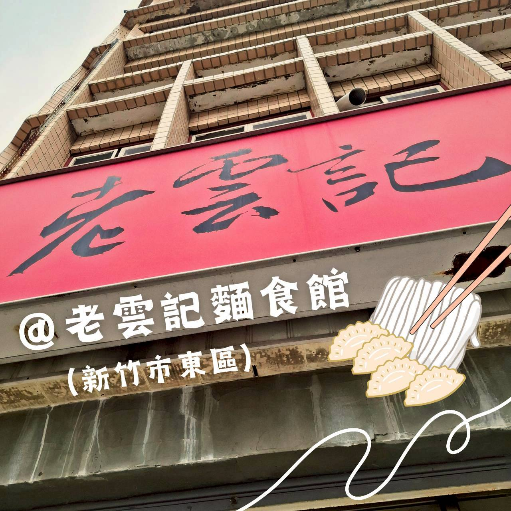
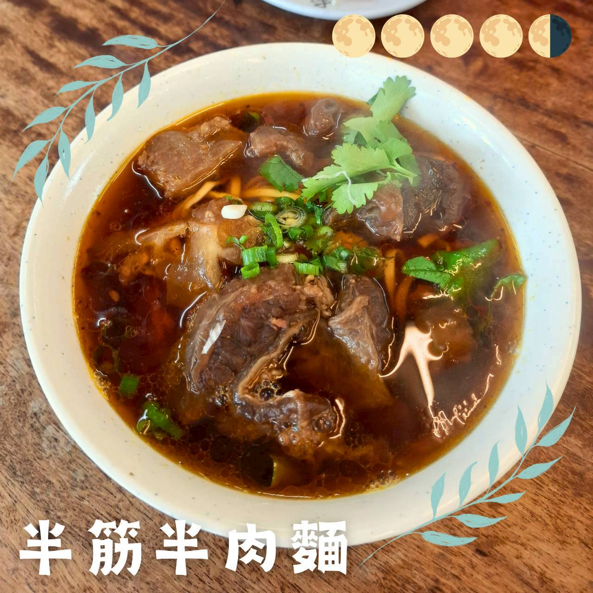
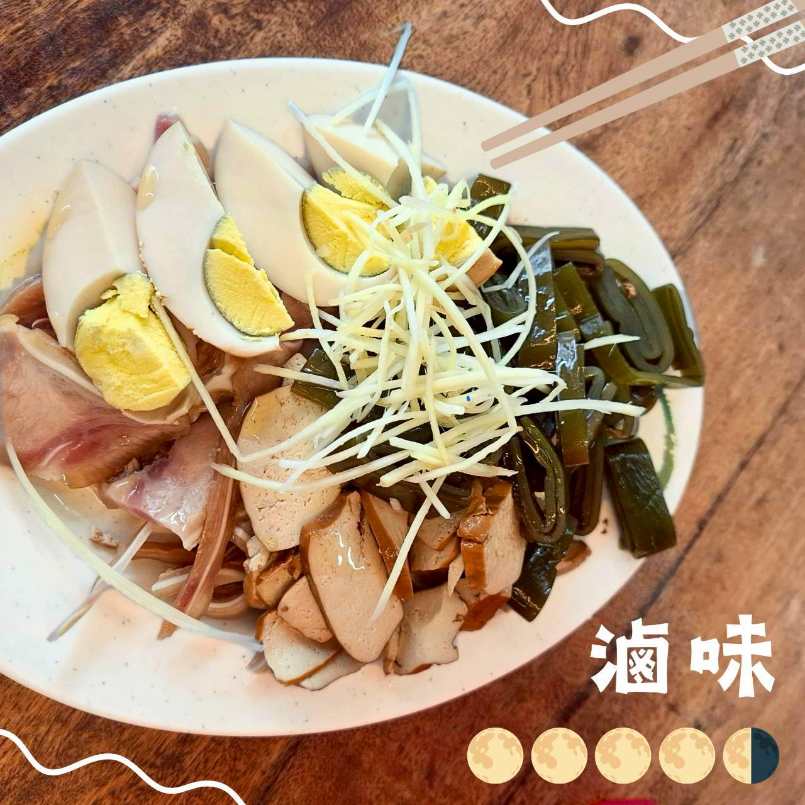

老雲記餃子館（麵食館）
1️⃣ 基本資料
- 餐廳名稱：老雲記餃子館（麵食館）
- 地點：新竹市東區學府路1號（新竹建華國中附近）
- 價位區間：NT$60–200
- 營業時段：11:00–14:00、17:00–20:00（星期一、日公休）
- 是否需訂位：不提供線上訂位，用餐時刻稍有人潮。
2️⃣ 餐廳飲食類型與整體環境
餐廳飲食類型：在地水餃、牛肉麵、小菜滷味等傳統麵館。
目標客群：學生、上班族與在地居民，日常飲食。
總體環境氣氛：空間不大，牆上掛著多張披頭四的照片。木質圓桌有著傳統麵館的氛圍，人多時可能併桌。

3️⃣ 餐點評價
✨️ 半筋半肉牛肉麵
麻而不辣！湯頭入口麻香竄入鼻腔，牛筋燉得軟爛入口即化，牛肉不柴，調味合宜。湯肉筋配白麵，讓味蕾不感到無聊。

✨️ 滷味
帶有麻油香味，滷味口感清淡不顯單薄，風味平衡且成功。

4️⃣ 觀點與總結
：常見的菜色，不常見的口感，吃得到廚師的巧思，是用心做料理的店。
🐸：牛肉麵的麻香真的很不錯，冬天熱熱的一口湯，極致的享受。
🌟 評分
口味評分 0–5 分：4.5/5
回訪意願度 0–5 分：4/5
#老雲記麵食館 #半筋半肉麵 #牛肉麵 #滷味 #新竹市東區 #新竹市 #新竹美食 #午餐 #晚餐 #一球情侶新竹吃喝